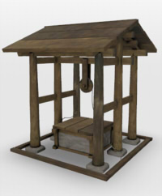

usd形式で出力したファイルです。
キャプチャ画像はiOS13の「AR Quick Look」を使用しています。
ライセンスはCC BY 4.0 としています。
ご自由にお使いくださいませ。
| 形状名 | Shade3D | usda + Textures | usdz | 説明 |
|---|---|---|---|---|
| PBRMaterialTest 2019/10/13 |
PBRMaterialTest.shd | pbrMaterialTest_usd.zip (76KB) |
pbrMaterialTest.usdz (64KB)
iOS12 : OK iOS13 : OK |
PBRマテリアルの比較。 |
| TextureTest 2019/10/13 |
TextureTest.shd | TextureTest_usd.zip (186KB) |
TextureTest.usdz (201KB) iOS12 : OK iOS13 : OK |
テクスチャの割り当て。 法線/反射テクスチャの割り当て。 色反転指定。 |
| RepeatTest 2019/10/13 |
RepeatTest.shd | RepeatTest_usd.zip (37KB) |
RepeatTest.usdz (52KB) iOS12 : NG iOS13 : OK iOS12はUsdTransform2dに未対応。 |
テクスチャの反復割り当て(USDのUsdTransform2dの検証)。 |
| leaf 2019/10/13 |
leaf.shd | leaf_usd.zip (338KB) |
leaf.usdz (343KB) iOS12 : NG iOS13 : NG iOS12では、pngテクスチャのAlphaを明示して参照できない。 iOS12/iOS13ではAR Quick Lookで影が透過されない、cutoutされない。 |
透明度の割り当て (Opacityの検証) ピクセル透過の表現。 |
| facegroup 2019/10/13 |
facegroup.shd | facegroup_usd.zip (57KB) |
facegroup.usdz (80KB)
iOS12 : OK iOS13 : OK |
Shade3Dでのフェイスグループの検証 （1Meshに複数マテリアルを割り当て）。 |
| unlit 2019/10/13 |
unlit.shd | unlit_usd.zip (146KB) |
unlit.usdz (196KB) iOS12 : OK iOS13 : OK |
Shade3Dの表面材質で「陰影付けしない」をOnにすると、Unlit風表現にします。 USDで、ior 1、metallic 1、roughness 1、diffuseColor (0, 0, 0)とし、 emissiveColorにdiffuseColorのテクスチャを入れることでUnlitとしました。 |
| cup 2019/10/13 |
cup.shd | cup_usd.zip (170KB) |
cup.usdz (244KB) iOS12 : OK iOS13 : OK ただし、AR Quick Lookで影が濃い。 |
Shade3Dでの回転体を出力。 透明表現、屈折率1.5。 |
| Apple 2019/10/13 |
apple.shd | apple_usd.zip (90KB) |
apple.usdz (108KB)
iOS12 : OK (*1) iOS13 : OK (*1) (*1) iOS12/13ではDoubleSidedは反映されない。 |
リンゴの形状。 1Meshに1Material。 DoubleSidedを使用。 |
| Cyawan 2019/10/13 |
cyawan.shd | cyawan_usd.zip (1045KB) |
cyawan.usdz (1197KB)
iOS12 : NG iOS13 : OK |
茶碗の形状。 1テクスチャにR:Occlusion/G:Roughness/B:Metallicを割り当てたPBRマテリアル。 テクスチャは、Substance Painterで作成してglTF出力したものです。 |
| subdiv_00 2019/10/18 |
subdiv_00.shd | subdiv_00_usd.zip (38KB) |
subdiv_00.usdz (54KB) iOS12 : NG iOS13 : NG iOS12/13ともに、subdivisionの表示に対応していない。 |
subdivisionのテスト。Meshで subdivisionScheme = "catmullClark" を指定。 USD Exporterでのエクスポート時に「Subdivison」チェックボックスをOnにして出力した。 usdviewでComplexity-Very Highにすると以下のようになる。これが理想。 |
| ido_01 2019/10/18 |
ido_01.shd | ido_01_usd.zip (341KB) |
ido_01.usdz (404KB) iOS12 : NG iOS13 : NG iOS12/13ともに、UV2の割り当てに対応していない。 |
Multiple UVsのテスト。UV2にOcclusionを割り当てている。 usdviewでは以下のようになる。これが理想。 |
| ido_02 2019/10/18 |
ido_02.shd | ido_02_usd.zip (399KB) |
ido_02.usdz (462KB)  iOS12 : OK iOS13 : OK |
Meshを複製してかぶせる形でUV2を使ったOcclusionを再現。 ido_01でのUV2を分離し、井戸を少し膨らませた（面ベベルで2mmオフセット）メッシュとして複製。 膨らませたメッシュにOcclusionを透明度マップした(USDに渡す際はOpacityになる)。 |
| boneTest 2019/10/19 |
boneTest.shd | boneTest_usd.zip (40.6KB) |
boneTest.usdz (61.2KB) iOS12 : OK iOS13 : OK |
skeletal animationのテスト。 ボーンを使ったモーション付け。 |
| kan_with_dirt 2020/01/25 |
kan_with_dirt.shd | kan_with_dirt_usd.zip (1094KB) |
kan_with_dirt.usdz (1255KB) iOS13 : OK |
要 : USD Exporter ver.0.0.2.0 - 複数テクスチャのベイクのテスト。 エクスポート時に「テクスチャをベイク」をOnにして出力してください。 |